ITMA Rahbari Kubogi
The Agency for Specialized Educational Institutions’ Director’s Cup
- Role
- Founder & Tournament Director
- Organization
- Agency for Specialized Educational Institutions (ITMA, its Uzbek abbreviation)
- Dates
- Feb 2025 – Present


ITMA Rahbari Kubogi started as a childhood dream of school-to-school football tournaments. With the Agency for Specialized Educational Institutions, I turned it into a national sports and networking cup: 224 schools and more than 7,000 students in its first season.
The idea
A childhood dream
From my early childhood, I was very interested in football because my family loves football. I dreamed about street-to-street, class-to-class, school-to-school tournaments. Additionally, many students in my school were coming to me and asking for my help by saying that I had a huge network with students outside the school and they also wanted to network with others. Students from other schools also were saying they wanted to network and communicate with Presidential School students. Then I thought, why can’t I connect both? And then organizing ITMA Rahbari Kubogi came to my mind.
In February 2025, I started forming a team all over the country and made a team consisting of students from all corners of the country in order to help me to start this initiative. Finally, in September, I, with my school principal and Behruz Baratov, a member of our team, went to the Agency’s office in order to present this idea to the Director of ITMA. She liked it and said that the Agency was going to support this idea, and we held the opening ceremony of this project in my school, at the Presidential School in Jizzakh, where this project was born.

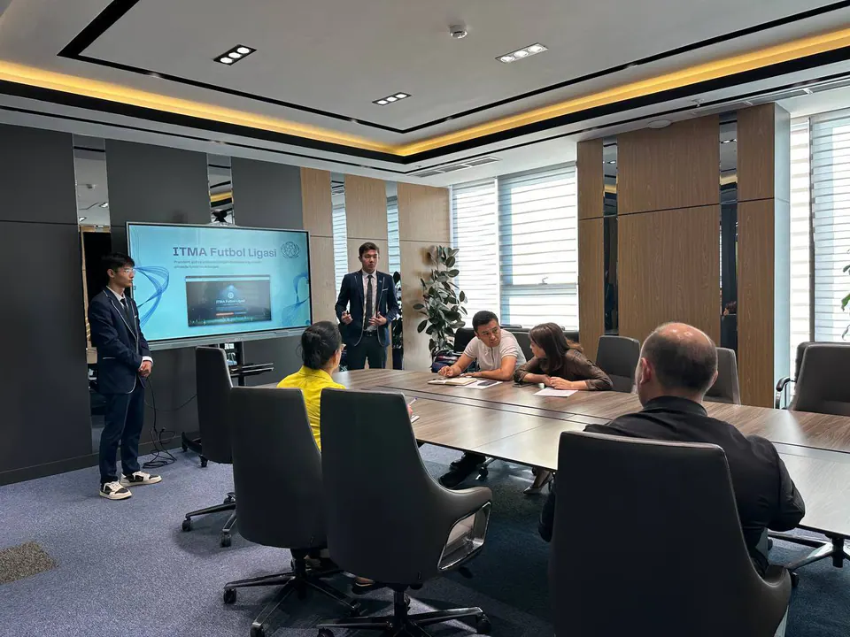

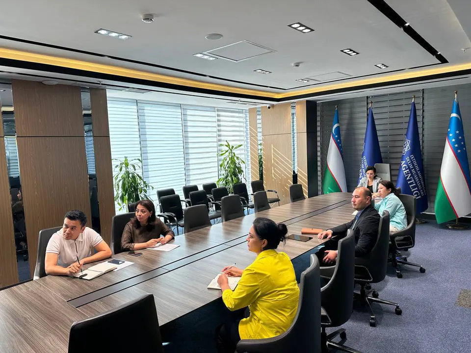
- 1Feb 2025Built the teamStudents from every corner of the country.
- 2Sep 2025Pitched to the AgencyThe Director agreed to support it.
- 326 Oct 2025Opening ceremonyAt the Presidential School in Jizzakh.
- 4Apr 2026Republican finalChampions crowned. Next year’s final will be hosted by the winners.
- Mini football
- Volleyball
- Table tennis
- Chess
2025 – 2026 season
224 schools, one cup
This project consists of 3 main stages: group, regional, and final republican. The Agency helped a lot to implement and organize it all over the country. ITMA Rahbari Kubogi included four sports (mini football, volleyball, table tennis and chess), where we covered 224 schools and 7,000+ students in a single academic year, promoted a healthy lifestyle, and created an opportunity to have a network among these people. We ensured this tournament was fair. Even though it was my project, my own school’s team lost at the regional stage and did not reach the final. I went to the final only as its organizer. The main purpose of the project was to create a bridge between schools all over the country and create an opportunity for them to have a network with each other and use that network in their future careers.

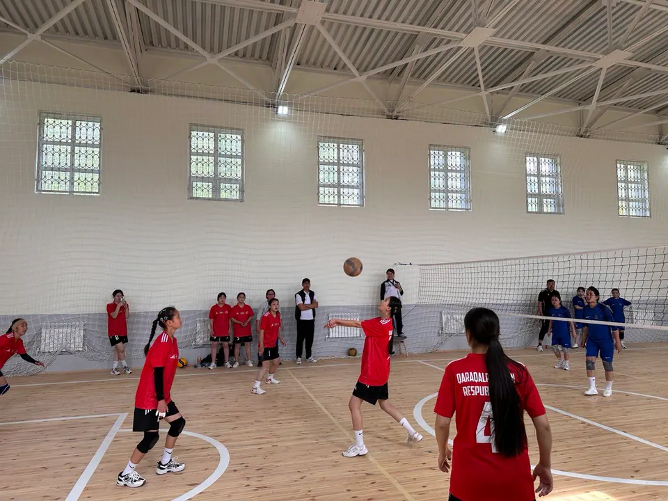

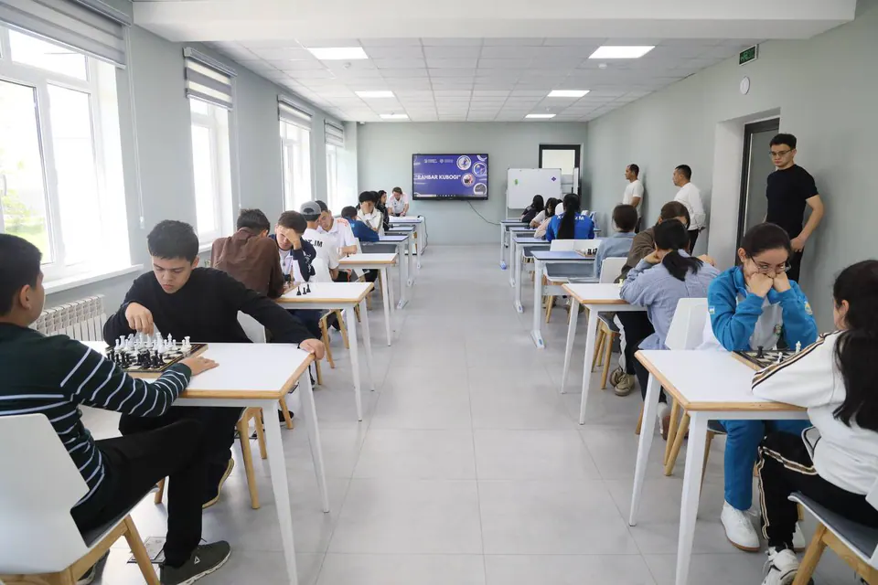

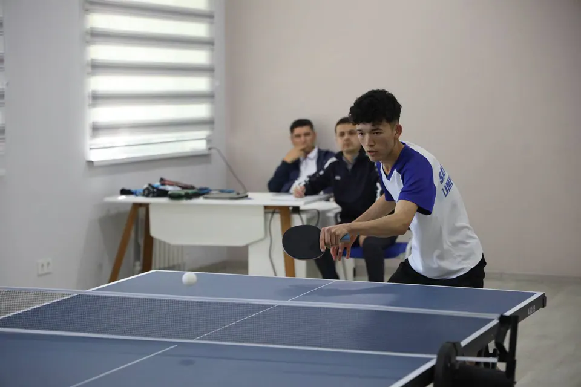

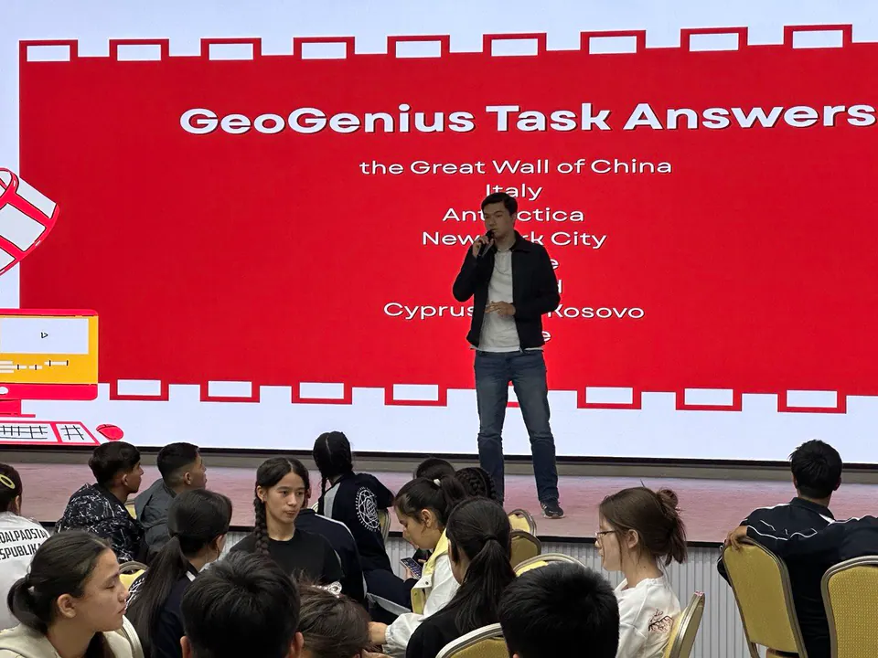

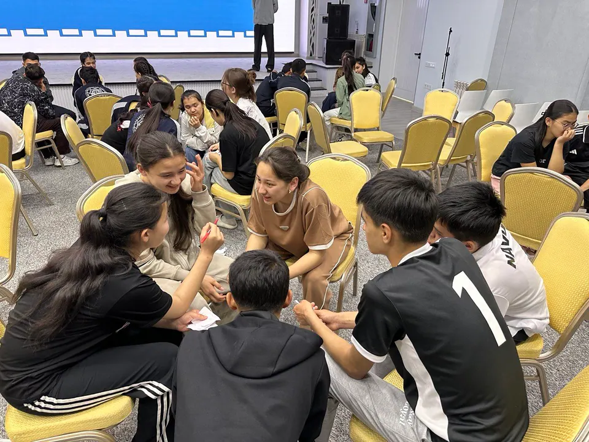
 Play video: ITMA Rahbari Kubogi: Opening Ceremony
Play video: ITMA Rahbari Kubogi: Opening Ceremony
 Play video: ITMA Rahbari Kubogi: Regional Stage Highlights
Play video: ITMA Rahbari Kubogi: Regional Stage Highlights
 Play video: ITMA Rahbari Kubogi: Regional Stage Highlights, part 2
Play video: ITMA Rahbari Kubogi: Regional Stage Highlights, part 2
 Play video: ITMA Rahbari Kubogi: Republican Final
Play video: ITMA Rahbari Kubogi: Republican Final
Planned to continue every year
A cup that travels
Each year, the final stage is going to happen at the place that won the cup in the previous year. So this cup will be going around the country, switching between schools that got first place. The plan is to hold it every year. And I am very happy about connecting people with each other and making my childhood dream come true.

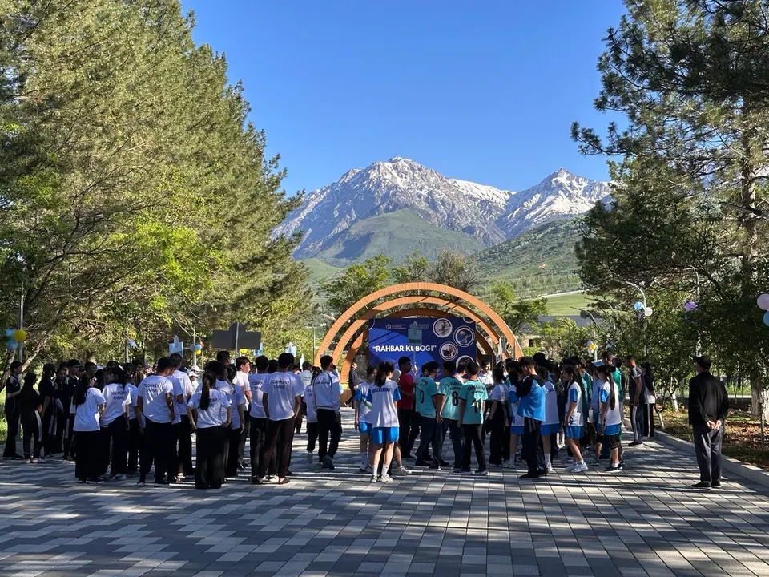

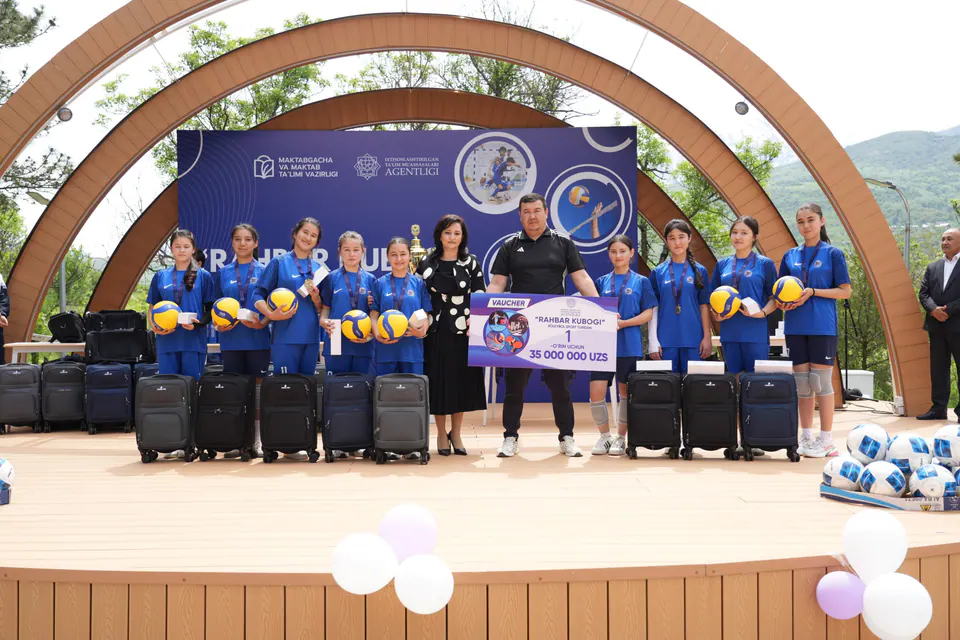
Gallery
More moments

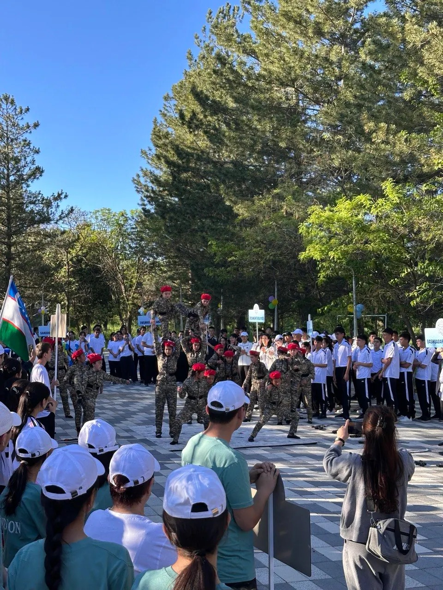

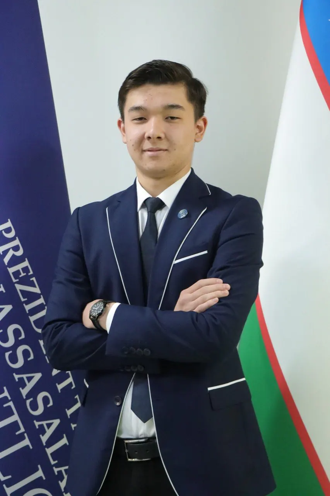